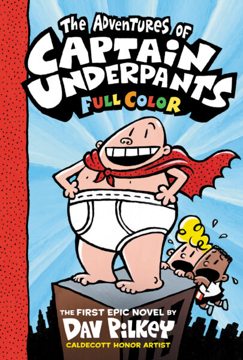

Captain Underpants

Details
My notes
Captain Underpants books.
About
Dav Pilkey’s illustrated book series follows George Beard, Harold Hutchins, and their superhero creation, Captain Underpants.
Identification
The book memory is recorded. Particular editions, reading years, and personal scenes are not recorded yet.